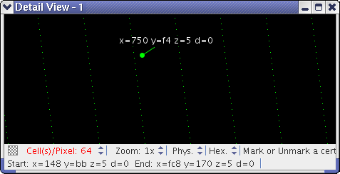

Detail view
A detail view is a view of a part of the loaded bit fail maps that allows you to examine several areas of the DUT at the same time or view an overview at the same time as details.

There can be as many detail views as required at the same time.
The coloring in a detail view window are the same as in the Chip Overview tab.
All existing detail views are listed in the Current Detail Views list in the Chip Overview tab. Closing a detail view eliminates it completely.
The shortcut menu in a detail view is the same as in the main area of the Chip Overview tab.
Functional changes
- Introduced before SmarTest 6.3.2